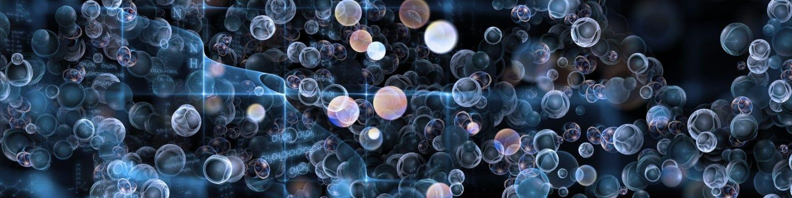

The project was divided in two main parts:
For this first part, the reaction energy of water splitting using different functionals (LDA, PBE, PBEsol, RPBE) in LCAO and PW mode was calculated.
In this way, a better understanding on the best method and functional to be used could be investigated. Moreover, by analyzing the DATA, a clear overview of the best accuracies with respect to the experimental value could be determined.
For this second part, the catalytic properties of different surface were calculated instead. Main parts of the tasks performed were:
A small part of the code can be seen below, in which the adsorbate was put in different sites of the Cu slab and energies were calculated.
# Run through the configurations with a H adsorbate
for position in ['ontop','longbridge','shortbridge','hollow']:
parprint('Relaxing {}'.format(position))
atoms = slab.copy() # Make a new clean copy
add_adsorbate(slab=atoms, adsorbate='H',
height=1.5, position=position)
name = 'H-'+position
calc = GPAW(txt='relax-Cu110_' + name + '.txt', **settings)
atoms.calc = calc
relax = BFGS(atoms, trajectory='relax-Cu110_' + name + '.traj',
logfile='relax-Cu110_' + name + '.log')
relax.run(fmax=0.05)
calc.write('Cu110_' + name + '.gpw')
energies_slab[position] = atoms.get_potential_energy()
# Get energies for H2 we calculated earlier
with paropen('energies_ex2.pckl', 'rb') as f:
energies = pickle.load(f)
# Calculate adsorption energies
e_ontop = energies_slab['ontop'] - energies_slab['clean'] - 1/2. * energies['H2', 'PBE']
e_bridge = energies_slab['longbridge'] - energies_slab['clean'] - 1/2. * energies['H2', 'PBE']
e_fcc = energies_slab['shortbridge'] - energies_slab['clean'] - 1/2. * energies['H2', 'PBE']
e_hcp = energies_slab['hollow'] - energies_slab['clean'] - 1/2. * energies['H2', 'PBE']
Presentation of the results can be seen here —> Final Project